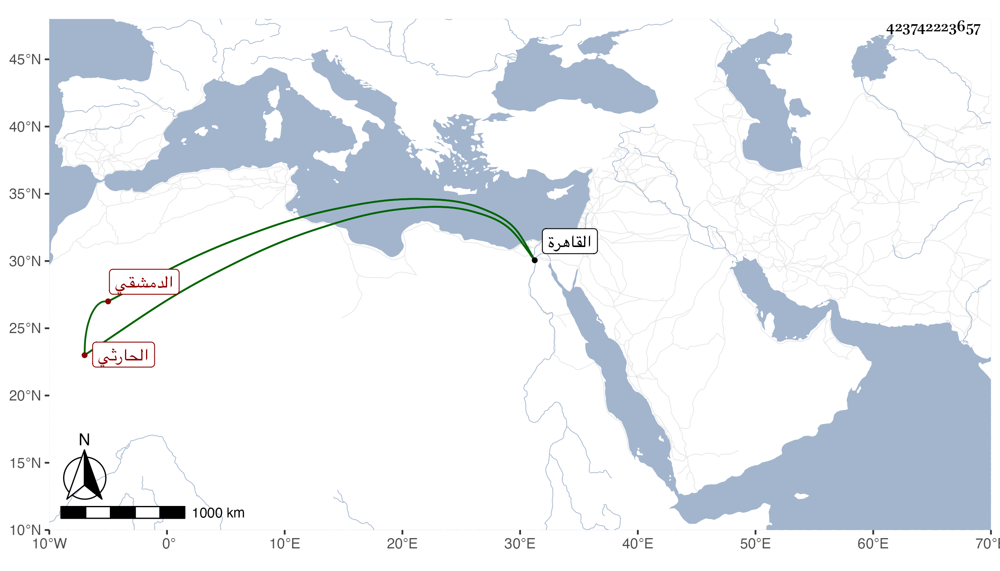

0902Sakhawi.DawLamic.ITO20230111-ara1.EIS1600.423742223657
Biography ID: 423742223657
573
محمود بن محمد بن إبرهيم بن محمود بن عبد الحميد بن هلال الدولة ويسمى عمر بن منير الحارثي الدمشقي موقع الدست بها ويعرف بابن هلال الدولة . قال شيخنا في إنبائه أخذ عن الصلاح الصفدي وبه تخرج وغيره وسمع من إبرهيم ابن الشهاب محمود ، وأجاز له زينب ابنة الكمال . وكان كاتبا مجودا ناظما ناثرا ولم يكن ماهرا مع شهرته بالخفة والرقاعة والضنة بنفسه ولكن كان ابن الشهيد يعتمد عليه . مات بالقاهرة فجأة في سنة خمس وله فوق الستين فإن مولده سنة ثلاثين أو إحدى وثلاثين وسبعمائة وعنوان نظمه أن بعض الرؤساء أعطاه فرجية خضراء فأنشده :
| مدحت إمام العصر صدقا حقه | وما جئت فيما قلت بدعا ولا نكرا |
| تبعت أبا ذر بمصداق لهجتي | فمن أجل هذا قد أظلتني الخضرا |
وذكره شيخنا في معجمه بحذف محمود من نسبه ولم يترجمه المقريزي في عقوده في ابن إبرهيم بن محمد بن محمود وقال إنه قدم القاهرة في الفتنة وكتب بها في الإنشاء حتى مات بها في جمادى الآخرة وروى عن محمد بن سلمان الصالحي عنه الشعر السابق .
